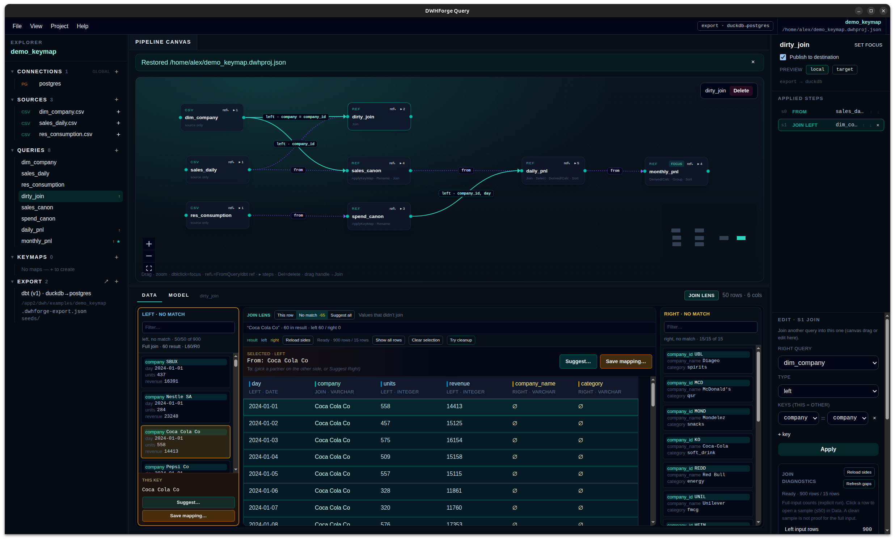

Local desktop workbench for warehouse transforms
DWHForge Query
Your data → map → analyze → dbt
One loop on your machine: sources in, inspectable pipeline out, export your repo can run.
- Connect — Postgres, CSV, Parquet, S3; secrets stay local.
- Build & preview — canvas steps with live intermediate results, not a blind compile.
- Map dirty keys — Join Lens shows why a row missed; the mapping you accept (manual, fuzzy, or LLM suggest)—never automatic ON.
- Analyze mappings — family/grade coverage, concentration, and CheckRuns—not a fake global quality score.
- Build / deploy — export real dbt, parse, and build to DuckDB or PostgreSQL.

Why it exists
From messy inputs to a pipeline you keep
Two feeds spell the same company differently. A join drops rows. A rule changes a week after the first export. Investigate and edit where you build—then ship code you can run in your own infra.
-
See the data behind the graph
Select a query or an applied step and inspect its intermediate result before you publish.
-
Investigate joins where you build them
Create a Mapping from two local queries, diagnose misses in Join Lens, clean near-miss keys, and edit From→To (including composite keys)—stored as a seed, warehouse table, or existing dbt model. See the mapping toolkit →
-
Compute where it makes sense
DuckDB for files and prep; PostgreSQL when the warehouse should own execution. Engine and destination are separate choices.
-
Keep the result as code
Export SQL models, sources, dependencies, and mapping dictionaries (seed CSV when that storage is chosen). Run them with dbt outside the app—in Git, CI, or your existing automation.
-
Come back and change it
Edit the workspace and re-export. Hash checks detect hand-edits to generator-owned files before overwrite.
-
Reuse another saved project
Reference a teammate’s
.dwhproj.jsonand use its queries or mappings without copying them in. Updates are explicit; export still ships one self-contained dbt project. -
Optional LLM—you choose the endpoint
Join Lens can call an OpenAI-compatible API for Suggest all and chat on hard aliases. Compute stays local. The prompt includes a bounded context: schemas, lineage, unmatched keys, neighbor field samples, and existing aliases—not a full table dump. If that endpoint is remote, that context leaves the machine. Mapping toolkit →
Mapping toolkit
Advanced tools for dirty join keys—not a black-box fuzzy merge
When sales says SBUX and the dimension says
STARBUCKS CORP, you need a map you author from real
queries, diagnosis in Join Lens, and a place that dictionary
lives—not silent fuzzy ON.
-
Create mapping from queries
Pick two local queries, source key(s) and a target column, then optionally restore columns dropped by a last Fields step. Review the plan and commit all-or-nothing into a seed Mapping—the existing editor opens for stewardship. Create does not Apply, Join, Check, export, or warehouse-Save.
Intent is stored as typedauthoring_contexton the map (ADR-0034). Cancel leaves the project unchanged. -
Join Lens
Investigate the Join you are editing: This row (parents of the selected result) and No match (values without a partner). Suggest all… is a separate action for batch rename ideas—not a third investigate mode.
-
Clean up join keys…
When trim, case, or leading zeros would recover matches, accept an explicit cleanup step before the Join (NormalizeKey in the IR). Suggestions require acceptance; automatic fuzzy merge stays off.
-
Mapping editor
First-class tab next to the pipeline. Maintain alias → canonical ID like a dimension table—including composite From when uniqueness needs a tuple (offer id + day), not a glued string. Add unmatched values from Join Lens with one gesture; Apply to left / right (or both) wires the map onto the Join.
-
Mapping quality overview
Help lab aggregates family/grade correspondence, decision basis, and target concentration over a large offline fixture—observations, not a fake global score. Inspect a region into Join Lens; save a MappingCheck, remap with a frozen revision, and compare CheckRun deltas. Lab walkthrough →
-
Reuse across queries
One mapping cleans sales and spend (or any feed) via Apply steps on each side. Storage is your choice—see the three options below.
-
Three places a mapping can live
Seed — editable dictionary; Export writes
seeds/map_*.csv(typed varchar so leading zeros survivedbt seed). After the first export the seed is SoT: edit in Git or sync back; re-export detects hand-edits.
PostgreSQL table — bind an existing warehouse table; Save writes dirty rows back (optimistic concurrency).
Existing dbt model — use{{ ref('…') }}in the export. No promise to edit that model in-app or to preview its rows in local DuckDB. -
When fuzzy cannot invent the answer
Tickers, legacy IDs, and historical names that never appear in the dimension stay human-owned in the mapping—not guessed into the Join ON.
-
Optional LLM assist
Connect an OpenAI-compatible endpoint in Join Lens Auto → Connect LLM (saved to
~/.dwhforge-query/settings.json). Use Suggest all… for similar-name proposals you Accept into a mapping, then chat about leftovers.
The prompt sends a limited context: join lineage, schemas, unmatched keys, neighbor-field samples, and existing aliases—not entire preview tables. If the endpoint is external, that context leaves the machine. The model narrates and suggests; it does not rewrite Join keys or invent counts.
Core loop
Your data → map → analyze → dbt
Built for data engineers, DBAs, and consultants who already live in Postgres, files, and dbt—not another analyst black box.
-
Connect
PostgreSQL, CSV, Parquet, S3-compatible storage, and DuckDB files in one project explorer. Secrets stay on your machine.
-
Build & preview
Join, append, filter, group, sort, calculated columns, and custom SQL—with Applied Steps and live intermediate results, not a blind compile.
-
Map dirty keys
Join Lens shows why a row missed; accept the mapping yourself (manual, fuzzy, or LLM suggest)—never automatic join ON. Create a Mapping from two queries when aliases need a dictionary first.
-
Analyze mappings
Family/grade coverage, concentration, and CheckRuns over the Help lab—observations to inspect, not a fake global quality score.
-
Build / deploy
Mark queries to publish, export a real dbt project, gate on offline parse, then build to DuckDB or PostgreSQL—inside the app or from the CLI.
Routes
Engine ≠ destination
| Sources | Execution | Destination |
|---|---|---|
| PostgreSQL | dbt-postgres |
PostgreSQL |
| Files / S3 | dbt-duckdb |
DuckDB |
| Files / S3 | dbt-duckdb |
PostgreSQL |
| DuckDB | dbt-duckdb |
PostgreSQL |
Try it
Company aliases → PostgreSQL
The bundled Key mapping demo follows sales and spending across 15 companies and 60 days—same businesses, different names. Use the full mapping toolkit end to end (seed storage in the demo). For structure-at-scale, open Help → Mapping labs.
-
Open the problem. Help →
Load demo → Key mapping; inspect
dirty_joinwithout a map. Or create a map from two local queries when you already know the key columns. - Diagnose in Join Lens. Open No match; try Clean up join keys… where trim/case helps; Save mapping… for true aliases.
- Edit the mapping. Fill From→To (including non-lexical leftovers like tickers, or a composite From). Optional: connect an LLM in Join Lens Auto for Suggest all… / chat on hard aliases—then Accept into the map. Apply to left on sales and spend with one shared mapping.
-
Ship it. Follow daily →
monthly; Export dbt. With seed storage the map lands as
seeds/map_*.csv. Build to PostgreSQL when ready.
Get the app
Linux and Windows portable builds
Electron portable packages with offline DuckDB extensions. No DWHForge account. Early development—expect sharp edges.
Loading latest release…